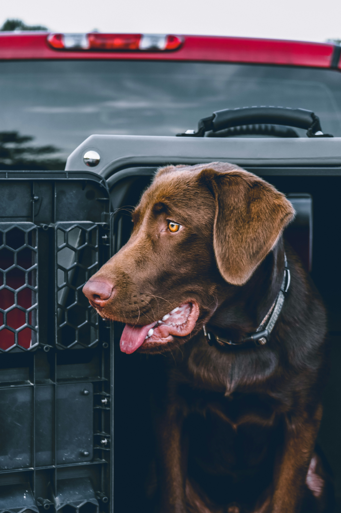
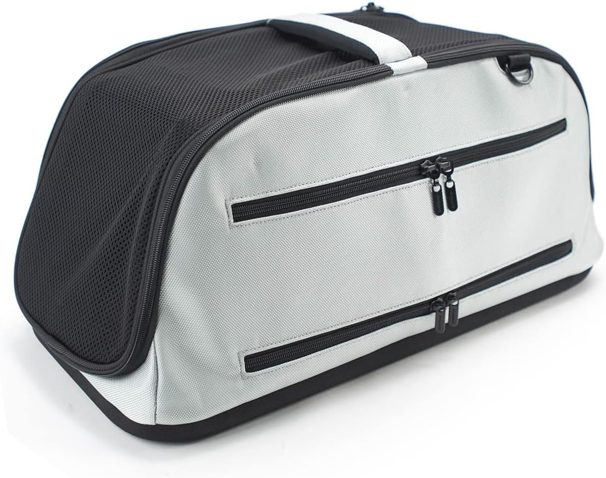
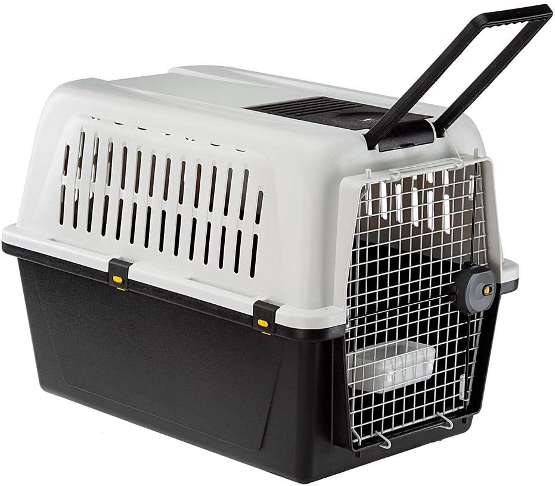
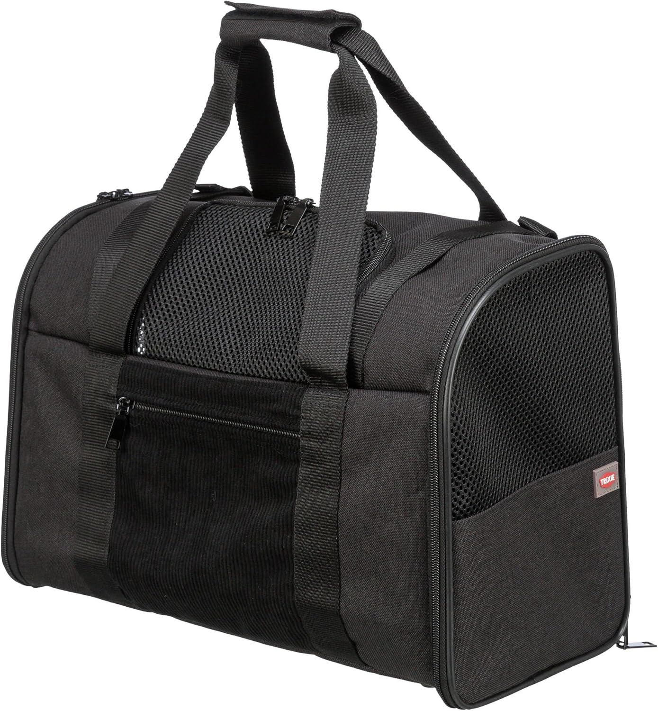
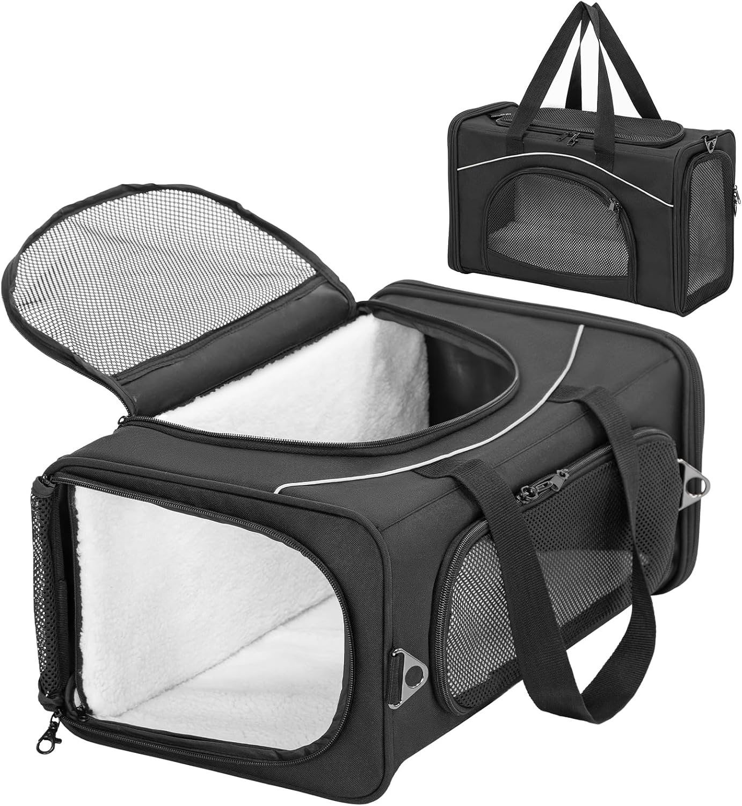
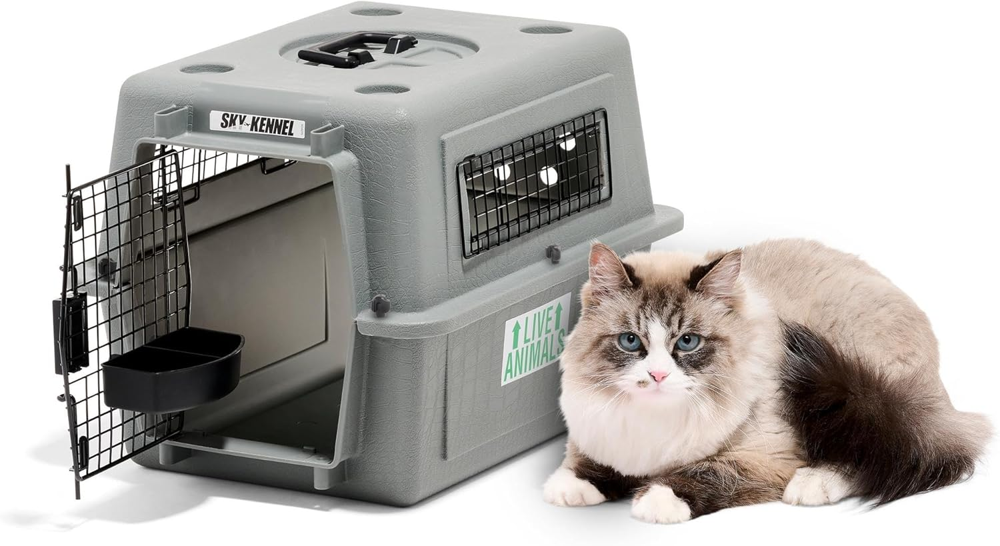

Transportines homologados para cabina de avión 2026: guía por aerolínea
Vueling, Iberia, Air Europa, Volotea... cada aerolínea tiene sus propias medidas y condiciones. Equivocarte en el transportín puede costarte el vuelo. Esta guía recoge todo actualizado a abril de 2026 para que no haya sorpresas en el aeropuerto.
📅 Actualizado: abril 2026·12 min de lectura·6 aerolíneas analizadas5 transportines reseñados

Transparencia: algunos enlaces son de afiliado (Amazon Associates, tag: primepick03f9-21). Sin coste para ti. Datos de aerolíneas verificados en abril 2026 — te recomendamos confirmar siempre en la web oficial antes del vuelo ya que las normativas pueden cambiar.
Viajar en avión con tu perro o gato pequeño en cabina es posible — pero requiere preparación. El mayor error que cometen los dueños es comprar un transportín sin comprobar primero las medidas de su aerolínea. Un transportín de 46×28×24 cm perfectamente válido para Air France puede ser rechazado en el gate de Vueling, que exige máximo 45×39×21 cm.
En esta guía encontrarás las medidas exactas de cada aerolínea que opera desde España, los 5 mejores transportines del mercado con análisis de compatibilidad, y todo lo que necesitas saber sobre documentación y consejos prácticos.
⚠️
Importante: las plazas para mascotas en cabina son muy limitadas — entre 2 y 5 por vuelo según la aerolínea. Reserva siempre con antelación al comprar el billete, no en el aeropuerto. Si no hay plaza disponible, tu mascota no podrá volar.
Normativa por aerolínea — actualizado abril 2026
✈️
Vueling
Aerolínea de referencia en España
✓ Admite mascotas
Medidas máx. transportín
45 × 39 × 21 cm
Peso máx. (mascota + transportín)
10 kg
Precio cabina
40€ nacionales · 50€ internacionales
Mascotas permitidas
Perros, gatos, aves (no rapiña), tortugas
Plazas por vuelo
Máx. 5 mascotas (2 en vuelos Iberia)
Tipo transportín
Solo blando (no rígido)
⚠️ No disponible en vuelos a/desde Reino Unido e Irlanda. Requiere tarifa Fly Light o Basic. Reserva obligatoria al comprar el billete.
✈️
Iberia / Iberia Express
Grupo Iberia — política unificada
✓ Admite mascotas
Medidas máx. transportín
45 × 35 × 25 cm
Peso máx. (mascota + transportín)
8 kg
Precio cabina
40€ nacionales · 125€ Europa · 180€ larga distancia
Mascotas permitidas
Perros, gatos, peces, tortugas, aves (no rapiña)
Cómo reservar
Al comprar el billete en iberia.com, apartado "Mascota en cabina"
Restricciones
No se admiten mustélidos (hurones, martas)
⚠️ La suma de las tres dimensiones del transportín no debe exceder 105 cm. Los perros braquicéfalos solo pueden volar en cabina, no en bodega.
✈️
Air Europa
La más flexible con mascotas en España
✓ Admite mascotas
Medidas máx. transportín
55 × 35 × 25 cm
Peso máx. (mascota + transportín)
10 kg en cabina · 50 kg en bodega
Precio cabina
50€ nacionales · 150€ internacionales
Mascotas permitidas
Perros, gatos, tortugas, peces, roedores
Máx. por pasajero
5 mascotas entre cabina y bodega
Ventaja clave
Permite bodega hasta 50 kg — única para perros grandes
✓ La aerolínea más permisiva en España. Permite hasta 10 kg en cabina vs 8 kg del resto. Perros PPP deben llevar bozal obligatorio en bodega.
✈️
Volotea
Low cost con política propia
✓ Admite mascotas
Medidas máx. transportín
50 × 40 × 20 cm
Peso máx. (mascota + transportín)
10 kg
Mascotas permitidas
Solo perros y gatos (+8 semanas edad)
Plazas por vuelo
Solo 1 mascota por vuelo
⚠️ Solo 1 mascota por vuelo — reserva con muchísima antelación. No admite otras especies.
✈️
Ryanair
La más usada en España
✗ No admite mascotas
Mascotas en cabina
No permitidas
Excepción
Solo perros guía o de asistencia certificados
❌ Ryanair no permite mascotas en ningún vuelo salvo perros guía. Si vuelas con Ryanair, tu mascota no puede acompañarte. Alternativa: Vueling o Iberia en las mismas rutas.
✈️
EasyJet
Low cost europeo
✗ No admite mascotas
Mascotas en cabina
No permitidas
Excepción
Solo perros de asistencia especial
❌ EasyJet tampoco permite mascotas. Si necesitas vuelos desde España a UK, considera British Airways o Iberia.
Tabla comparativa rápida — medidas por aerolínea
Aerolínea
Medidas máx. (L×A×H)
Peso máx.
Precio cabina
Admite
Vueling
45×39×21 cm
10 kg
40–50€
✓
Iberia / IB Express
45×35×25 cm
8 kg
40–180€
✓
Air Europa
55×35×25 cm
10 kg
50–150€
✓
Volotea
50×40×20 cm
10 kg
Consultar
✓ (1/vuelo)
Ryanair
—
—
—
✗
EasyJet
—
—
—
✗
💡
El transportín universal para España: si buscas uno que sirva para todas las aerolíneas españolas que admiten mascotas, busca medidas de 45×35×21 cm o menos — cumplen con Vueling (la más restrictiva en altura), Iberia y Air Europa a la vez.
Los 5 mejores transportines homologados para cabina

01
GanadorEl más versátil
Sleepypod Air — transportín blando premium
El transportín de referencia para viajeros frecuentes con mascotas. Diseño expandible que cabe bajo cualquier asiento de avión, con panel lateral que se despliega para dar más espacio durante el vuelo. Material resistente al agua, ventilación en los cuatro lados y fondo acolchado desmontable.
✓ Compatible con: Vueling · Iberia · Air Europa · Volotea · Air France · Lufthansa
Medidas: 43×30×23 cm (expandido: 43×30×33 cm)Peso: 1,1 kgCarga max: 7 kg

02
SemirígidoMejor calidad-precio
Ferplast Atlas Jet — semirígido homologado IATA
Transportín semirígido con estructura reforzada que protege mejor a la mascota que los blandos, pero con la flexibilidad suficiente para caber bajo el asiento. Homologado IATA para cabina. Ventanas de malla en tres lados, cierre con cremallera de doble pasador y base impermeable. Disponible en tallas XS y S.
✓ Compatible con: Vueling · Iberia · Air Europa · Volotea
Medidas: 46×30×27 cm (talla S)Peso: 1,4 kgCarga max: 6 kg

03
EconómicoMuy vendido
Trixie 28941 — bolsa transportín blando
El más vendido en Amazon España para viajes en avión. Bolsa blanda con estructura en las paredes laterales para mantener la forma, tres paneles de malla para ventilación, correa de hombro y asa superior. Base impermeable con almohadilla lavable. La opción más económica que cumple con las medidas de Vueling e Iberia.
✓ Compatible con: Vueling · Iberia · Air Europa · Volotea
Medidas: 44×28×28 cmPeso: 0,8 kgCarga max: 6 kg

04
ExpandibleCómodo en vuelo
Petsfit — bolsa expandible con panel lateral
Similar al Sleepypod pero a precio más accesible. Panel lateral expandible que da más espacio durante el vuelo y se recoge para pasar el control. Diseño en lona resistente con refuerzo en las esquinas. Bolsillo exterior para documentación y accesorios. Muy valorado por dueños de gatos por su amplitud interior.
✓ Compatible con: Vueling · Iberia · Air Europa · Volotea
Medidas: 43×26×26 cm (expandido: 43×26×36 cm)Peso: 1,2 kgCarga max: 7 kg

05
RígidoSeguridad máxima
Kennel Cab — rígido homologado para cabina
La opción para mascotas que necesitan más seguridad estructural o para dueños que prefieren la rigidez. Plástico ABS resistente, puerta metálica con doble cierre, ventilación lateral y superior. Aunque es rígido, su diseño permite colocarlo bajo el asiento gracias a sus dimensiones ajustadas. Ideal también para bodega.
✓ Compatible con: Iberia · Air Europa · Volotea (verificar con Vueling — solo admite blandos)
Medidas: 44×30×29 cmPeso: 1,8 kgCarga max: 8 kg
Documentación necesaria para volar con tu mascota
Independientemente de la aerolínea, necesitarás llevar esta documentación el día del vuelo:
Checklist de documentación 2026
✓Pasaporte europeo para mascotas — obligatorio en vuelos internacionales dentro de la UE
✓Microchip — obligatorio en España para perros y recomendado para gatos
✓Vacuna antirrábica — válida y administrada entre 21 días y 12 meses antes del vuelo
✓Cartilla veterinaria con vacunas al día — obligatoria en vuelos nacionales
✓Reserva confirmada del servicio de mascota con número de referencia
✓Certificado sanitario — necesario en algunos destinos fuera de la UE
🚨
Razas braquicéfalas (morro chato): Bulldogs, Pugs, Boston Terriers, Persas y similares tienen restricciones especiales en muchas aerolíneas por riesgo respiratorio. En Iberia solo pueden volar en cabina — nunca en bodega. Verifica siempre la política específica para tu raza antes de reservar.
10 consejos para que el vuelo sea tranquilo
Habitúa a tu mascota al transportín semanas antes — déjalo abierto en casa con su manta favorita dentro. Que lo asocie a algo positivo, no solo a viajes al veterinario.
No le des de comer 4-6 horas antes del vuelo — reduce el riesgo de náuseas y accidentes. Sí puedes darle agua hasta el momento del embarque.
Llega al aeropuerto con tiempo extra — el check-in con mascota requiere verificación en el mostrador. Cuenta al menos 30 minutos adicionales.
Pasa el arco de seguridad con la mascota en brazos — el transportín pasa por el escáner de rayos X, pero tu mascota debe pasar contigo por el arco detector de metales.
Lleva una muda en el equipaje de mano — por si hay algún accidente durante el vuelo.
No le des calmantes sin consultarlo antes con tu veterinario — algunos sedantes pueden ser peligrosos a altitud, especialmente en razas braquicéfalas.
Coloca el transportín bajo el asiento delantero en el momento del embarque — no esperes a que te lo pida la tripulación.
Lleva premios y su juguete favorito dentro del transportín para reducir el estrés.
Confirma la reserva 48h antes — algunas aerolíneas requieren confirmación telefónica.
No la saques del transportín durante el vuelo — está prohibido y puede causar problemas. Espera al desembarque.
Sí, Vueling permite mascotas en cabina siempre que el transportín no supere 45×39×21 cm y el peso total (mascota + transportín) no exceda 10 kg. Solo admite transportines blandos, no rígidos. Debes reservar el servicio al comprar el billete seleccionando tarifa Fly Light o Basic. El coste es 40€ en vuelos nacionales y 50€ en internacionales. Máximo 5 mascotas por vuelo.
No. Ryanair no permite mascotas en ningún vuelo, salvo perros guía o de asistencia debidamente certificados. Si necesitas volar con tu mascota en una ruta que opera Ryanair, busca alternativas como Vueling, Iberia o Volotea en esa misma ruta.
Depende de la aerolínea y el destino. En vuelos nacionales: Vueling 40€, Iberia 40€, Air Europa 50€. En vuelos europeos: Vueling 50€, Iberia 125€, Air Europa 150€. En larga distancia los precios suben significativamente. Recuerda que esta tarifa es por transportín, no por mascota.
Si el transportín no cumple las medidas o no cabe bajo el asiento delantero, la aerolínea puede negarse a embarcar a tu mascota. En el mejor caso, pueden pedirte que la factures en bodega con coste adicional. Por eso es fundamental elegir un transportín con medidas inferiores a las máximas permitidas — no exactamente iguales, sino unos centímetros por debajo.
Para vuelos nacionales (incluidas Canarias, Baleares y Ceuta/Melilla) no se exige pasaporte europeo, pero sí cartilla veterinaria con vacunas al día y microchip. Para vuelos internacionales dentro de la UE sí es obligatorio el pasaporte europeo para mascotas, que emite tu veterinario y acredita microchip, vacuna antirrábica vigente y estado sanitario.
Tan pronto como sea posible — idealmente al comprar el billete. Las plazas para mascotas son muy limitadas (entre 1 y 5 por vuelo según la aerolínea) y se asignan por orden de reserva. En temporada alta (verano, Navidades, Semana Santa) pueden agotarse semanas antes del vuelo.
Resumen: cómo no fallar con el transportín
El transportín universal para volar desde España — válido para Vueling, Iberia y Air Europa — tiene que medir menos de 45×35×21 cm y pesar menos de 8 kg con tu mascota dentro. Con esas medidas cumples con todas.
Nuestro ganador es el Sleepypod Air por su versatilidad y calidad. Para un presupuesto más ajustado, el Trixie 28941 es la opción más vendida en España y cumple con todas las aerolíneas.
Y recuerda: reserva el servicio de mascota al comprar el billete, no el día antes. Las plazas se agotan.